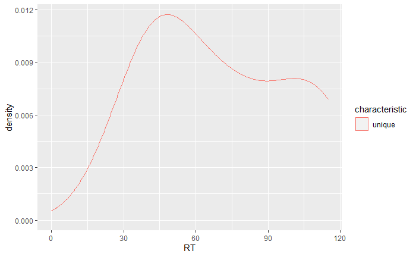
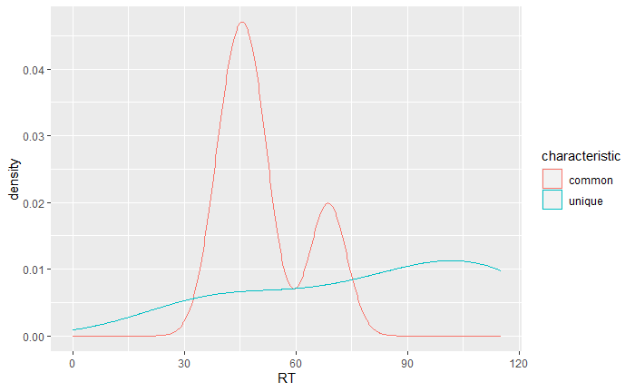
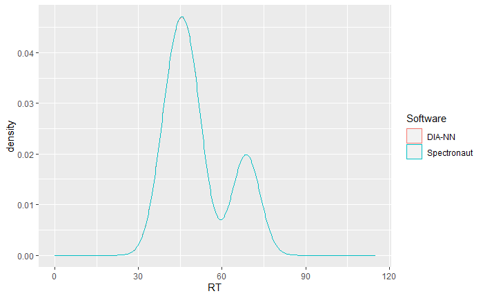
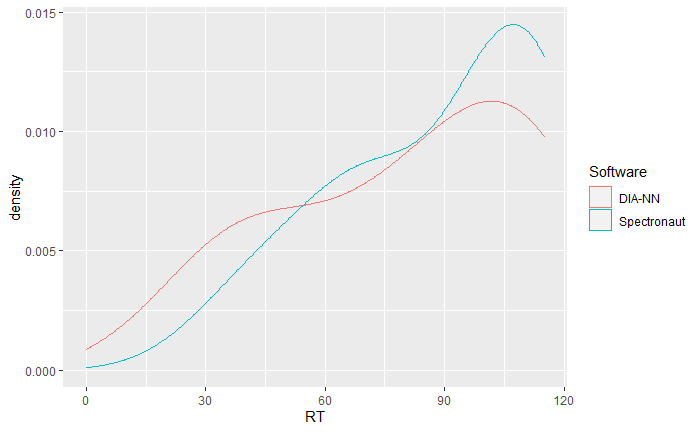

Example Retention Time Distribution
Oliver Kardell
Source:vignettes/Example_RT_distribution.Rmd
Example_RT_distribution.RmdIntroduction
This vignette serves as application example for analyzing inter-software differences with flowTraceR. Here, the focus is on retention time (RT). Note that this can be easily changed to other characteristics such as intensity, charge state etc. or can be expanded to other metadata e.g. quantitative and retention time precision.
Preparation
Use the provided example data or import your own data.
# Get example data
diann <- flowTraceR::get_example("RetentionTime")[["DIA-NN"]]
spectronaut <- flowTraceR::get_example("RetentionTime")[["Spectronaut"]]Conversion to standardized format
For converting precursor, modified peptide and proteingroup level at once use convert_all_levels().
# Convert all levels
diann_all_converted <- flowTraceR::convert_all_levels(input_df = diann, software = "DIA-NN")
spectronaut_all_converted <- flowTraceR::convert_all_levels(input_df = spectronaut, software = "Spectronaut")RT distribution
Without flowTraceR
Without conversion to a standardized format no distinction between common and unique precursor identifications can be made and thus no inter-software comparisons for characteristics such as retention time is possible.
#Example - DIA-NN output
#Get common entries based on software-specific entries
diann_common <- dplyr::semi_join(
diann_all_converted,
spectronaut_all_converted,
by = c("Precursor.Id" = "EG.PrecursorId"))
#Get unique entries based on software-specific entries
diann_unique <- dplyr::anti_join(
diann_all_converted,
spectronaut_all_converted,
by = c("Precursor.Id" = "EG.PrecursorId"))
#Connect
diann_all <- dplyr::bind_rows(
common = diann_common,
unique = diann_unique,
.id = "characteristic")
#Plot
#no common entries detected!
ggplot2::ggplot(diann_all, aes(x = RT, color = characteristic)) +
geom_density() +
scale_x_continuous(limits = c(0,115))
With flowTraceR
#Example - DIA-NN output
#Get common entries based on flowTraceR´s entries
diann_common_traceR <- dplyr::semi_join(
diann_all_converted,
spectronaut_all_converted,
by = c("traceR_precursor"))
#Get unique entries based on flowTraceR´s entries
diann_unique_traceR <- dplyr::anti_join(
diann_all_converted,
spectronaut_all_converted,
by = c("traceR_precursor"))
#Connect
diann_traceR <- dplyr::bind_rows(
common = diann_common_traceR,
unique = diann_unique_traceR,
.id = "characteristic")
#Plot
ggplot2::ggplot(diann_traceR, aes(x = RT, color = characteristic)) +
geom_density() +
scale_x_continuous(limits = c(0,115))
Inter-software comparison
Common entries
The inter-software comparison with flowTraceR shows high similarity between the RT of common precursor.
#Spectronaut - common entries
spectronaut_common_traceR <- dplyr::semi_join(
spectronaut_all_converted,
diann_all_converted,
by = c("traceR_precursor")) %>%
dplyr::rename(RT = EG.ApexRT)
#Common combined
RT_common <- dplyr::bind_rows(
"DIA-NN" = diann_common_traceR[,"RT"],
Spectronaut = spectronaut_common_traceR[, "RT"],
.id = "Software")
#Plot
ggplot2::ggplot(RT_common, aes(x = RT, color = Software)) +
geom_density() +
scale_x_continuous(limits = c(0,115))
Unique entries
#Spectronaut unique entries
spectronaut_unique_traceR <- dplyr::anti_join(
spectronaut_all_converted,
diann_all_converted,
by = c("traceR_precursor")) %>%
dplyr::rename(RT = EG.ApexRT)
#Unique entries combined
RT_unique <- dplyr::bind_rows(
"DIA-NN" = diann_unique_traceR[,"RT"],
Spectronaut = spectronaut_unique_traceR[, "RT"],
.id = "Software"
)
#Plot
ggplot2::ggplot(RT_unique, aes(x = RT, color = Software)) +
geom_density() +
scale_x_continuous(limits = c(0,115))